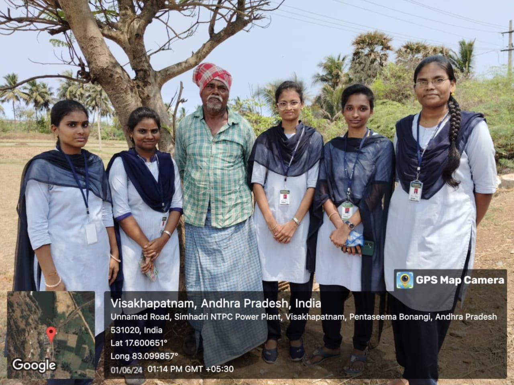

Survey Findings
As part of the survey conducted in Swayambupuram village, we gathered data from local residents on the impact of air pollution on their health and environment. Here are the key findings:
- Health Impacts: 70% of respondents reported suffering from respiratory issues such as asthma, coughing, and shortness of breath. Many attributed these issues to pollution from a nearby cement factory.
- Agricultural Impact: Farmers noted that their crops were being damaged due to acid rain and soil contamination, which they believe are caused by pollution in the air and water.
- Water Contamination: Several villagers reported that the local water sources had been contaminated, further harming crops and livestock and posing a risk to human health.
- Indoor Air Pollution: 60% of households still rely on traditional wood-burning stoves for cooking, contributing to indoor air pollution, which is particularly harmful to women and children.

These findings highlight the urgent need for better regulation of industrial emissions and for introducing cleaner cooking and heating alternatives to reduce indoor air pollution in rural households.